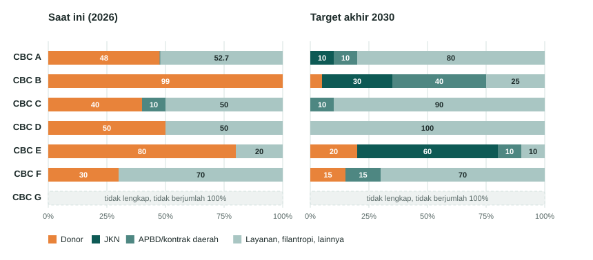
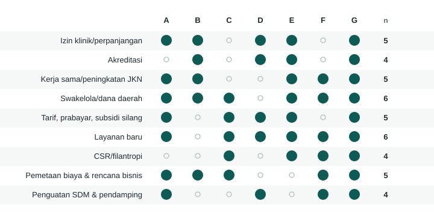
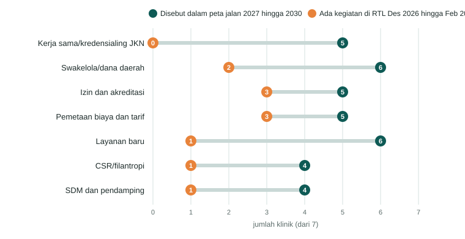

1. Pendahuluan
1.1 Transisi pendanaan donor
Dalam dua dekade terakhir, bantuan pembangunan untuk kesehatan berperan besar dalam memperluas layanan HIV, tuberkulosis, dan imunisasi di negara berpendapatan menengah. Ketika suatu negara naik kelas pendapatan atau donor mengubah prioritas, program yang dibiayai donor diharapkan beralih ke pembiayaan dan pengelolaan domestik. Proses ini disebut transisi. Tinjauan pelingkupan terhadap 89 publikasi menunjukkan bahwa transisi dipengaruhi oleh tindakan donor maupun pemerintah, berdampak pada setiap komponen sistem kesehatan, dan paling banyak didokumentasikan pada program HIV (Huffstetler et al., 2022). Transisi yang berhasil ditandai oleh kepemimpinan, perencanaan dini, dan investasi pratransisi pada kapasitas finansial, teknis, dan logistik negara penerima.
Studi komparatif di sepuluh negara Eropa Timur dan Asia Tengah menemukan tantangan transisi yang berulang: lemahnya estimasi kebutuhan pembiayaan, terbatasnya kemauan politik untuk menggantikan pendanaan donor, serta regulasi yang membatasi kemampuan pemerintah untuk mengontrak organisasi masyarakat sipil yang justru menjadi tulang punggung layanan bagi populasi kunci (Gotsadze et al., 2019). Sebaliknya, evaluasi prospektif transisi program pencegahan HIV Avahan di India menunjukkan bahwa persiapan yang memadai dapat mempertahankan cakupan layanan setelah transisi, meskipun komunitas merasakan fokus program menyempit dan terjadi kekosongan stok komoditas (Bennett et al., 2015). Kedua pengalaman ini menegaskan bahwa yang diwariskan bukan sekadar anggaran, melainkan fungsi: penjangkauan, pendampingan sebaya, dan layanan yang menjaga kerahasiaan.
1.2 Konteks Indonesia
Di Indonesia, sejumlah klinik berbasis komunitas (community-based clinics, CBC) dikelola yayasan atau organisasi masyarakat sipil dan menyediakan konseling dan tes HIV, layanan IMS, serta perawatan, dukungan, dan pengobatan (PDP) yang ramah bagi populasi kunci. Penanggulangan HIV dan IMS diatur dalam Peraturan Menteri Kesehatan Nomor 23 Tahun 2022, sedangkan layanan bagi orang dengan risiko terinfeksi HIV termasuk dalam Standar Pelayanan Minimal (SPM) Kesehatan yang wajib dipenuhi pemerintah daerah (Kementerian Kesehatan, 2022; 2024).
Setidaknya tiga jalur pembiayaan domestik tersedia bagi CBC. Pertama, Jaminan Kesehatan Nasional (JKN) melalui kerja sama dengan BPJS Kesehatan, yang mensyaratkan izin operasional dan proses kredensialing. Kedua, anggaran daerah, termasuk kontrak dengan organisasi kemasyarakatan melalui swakelola tipe III, yaitu swakelola yang direncanakan dan diawasi kementerian, lembaga, atau pemerintah daerah dan dilaksanakan organisasi kemasyarakatan (Peraturan Presiden Nomor 16 Tahun 2018 sebagaimana diubah dengan Peraturan Presiden Nomor 12 Tahun 2021; LKPP, 2021). Ketiga, pendapatan mandiri dari layanan berbayar, filantropi, dan tanggung jawab sosial perusahaan (CSR). Ketiga jalur ini memiliki prasyarat, siklus, dan risiko yang berbeda, terutama bagi akses populasi kunci.
1.3 Tujuan
Literatur transisi sebagian besar menilai kesiapan dari sudut pandang negara atau program nasional. Masih sedikit yang memeriksa bagaimana fasilitas pelaksana di tingkat komunitas merencanakan transisinya sendiri. Kertas kerja ini bertujuan untuk:
- mendeskripsikan posisi, target bauran sumber dana 2030, dan peta jalan 2027 hingga 2030 bagi tujuh CBC;
- menilai mutu rencana tindak lanjut (RTL) tiga bulan dan keselarasannya dengan target jangka panjang;
- mengidentifikasi hambatan dan kebutuhan dukungan yang disampaikan klinik; dan
- merumuskan implikasi bagi pendampingan dan kebijakan transisi.
2. Metode
2.1 Desain dan sumber data
Studi ini menggunakan analisis dokumen kualitatif-deskriptif (Bowen, 2009). Sumber data adalah tujuh berkas paparan yang disusun tim klinik dan disampaikan pada hari terakhir lokakarya keberlanjutan CBC, 9 hingga 11 November 2026. Setiap tim terdiri atas pimpinan atau penanggung jawab klinik, staf administrasi dan keuangan, serta perwakilan komunitas. Tim mengisi templat lima slide yang menjawab lima pertanyaan pemantik yang sama:
- Di mana posisi klinik kami hari ini?
- Seperti apa klinik kami di akhir 2030, saat dukungan donor berakhir?
- Apa yang akan kami capai setiap tahun menuju 2030?
- Apa yang akan kami kerjakan dalam tiga bulan ke depan (Desember 2026 hingga Februari 2027), dan siapa penanggung jawabnya?
- Apa yang bisa menghambat kami, dan dukungan apa yang kami butuhkan?
Dua klinik menggunakan format berbeda (format slide sendiri dan berkas PDF) dengan isi yang tetap mengikuti pertanyaan pemantik. Satu klinik mengirim dua versi berkas dengan isi sama; analisis memakai versi yang lebih lengkap.
2.2 Ekstraksi dan analisis
Isi setiap paparan diekstraksi ke matriks terstruktur dengan tujuh dimensi: kekuatan, prioritas penguatan, komposisi sumber dana saat ini dan target 2030, layanan dan fungsi yang dipertahankan, tonggak tahunan, kegiatan RTL, serta hambatan dan dukungan yang diminta. Angka disalin apa adanya. Untuk target berupa rentang, titik tengah dipakai hanya untuk visualisasi.
Analisis tematik dilakukan secara deduktif terhadap tema peta jalan (perizinan, akreditasi, JKN, dana daerah, tarif, layanan baru, CSR, pemetaan biaya, dan SDM) dan secara induktif terhadap hambatan serta kebutuhan dukungan. Kegiatan RTL dikelompokkan ke empat tema: legalitas dan mutu, keuangan dan biaya, advokasi dan pendanaan, serta layanan dan komunitas.
Mutu RTL dinilai dengan empat kriteria turunan prinsip SMART (Doran, 1981): (1) penanggung jawab jelas; (2) bulan pelaksanaan ditetapkan; (3) hasil dapat dicek secara objektif; dan (4) kegiatan selaras dengan tiga prioritas penguatan yang disebut klinik sendiri. Setiap kriteria diberi status terpenuhi, sebagian, atau belum. Keselarasan antara niat dan tindakan diukur dengan membandingkan jumlah klinik yang menyebut suatu tema dalam peta jalan dengan jumlah klinik yang mempunyai kegiatan RTL pada tema yang sama. Rencana tarif juga ditelaah dengan lensa guardrail akses, yaitu prinsip bahwa transisi pembiayaan tidak boleh mengorbankan kerahasiaan, keterjangkauan, dan suara komunitas (Shediac-Rizkallah & Bone, 1998).
2.3 Anonimisasi dan etika
Analisis ini memakai dokumen program, bukan data individu, dan dipublikasikan dengan izin pemberi kerja. Klinik diberi kode acak CBC A sampai G yang tidak mengikuti urutan nama, wilayah, atau kinerja. Nama orang, nama lembaga, kota, dan ciri khas yang dapat menunjuk satu klinik dihapus. Angka dan target adalah rencana klinik sendiri, bukan hasil verifikasi.
3. Hasil
3.1 Posisi klinik saat ini
Kekuatan yang paling sering disebut adalah sumber daya manusia dan pendamping yang terlatih, serta pendekatan yang ramah, menjaga kerahasiaan, dan bebas stigma. Prioritas penguatan membentuk dua kelompok. Kelompok legalitas (tiga klinik) masih membereskan izin operasional, kesesuaian fungsi bangunan, atau akreditasi sebagai prasyarat sebelum dapat mengakses pembiayaan publik. Kelompok pendapatan dan kemitraan (empat klinik) sudah berizin dan berfokus menata pendapatan layanan, kemitraan dengan pemerintah, dan CSR. Hanya satu klinik yang menyebut sistem data, pemantauan, dan mutu sebagai prioritas.
3.2 Pergeseran bauran sumber dana
Tabel 1 dan Gambar 1 menunjukkan komposisi sumber dana saat ini dan target akhir 2030. Porsi donor saat ini berkisar 30 hingga 99%. Pada 2030, lima klinik menargetkan porsi donor 0 hingga 10% dan dua klinik 15 hingga 20%.
| Klinik | Donor | JKN | APBD/kontrak daerah | Layanan, filantropi, lainnya | ||||
|---|---|---|---|---|---|---|---|---|
| Kini | 2030 | Kini | 2030 | Kini | 2030 | Kini | 2030 | |
| CBC A | 48 | 0 | 0,3 | 10 | 0 | 10 | 52,7 | 80 |
| CBC B | ±99 | 0 hingga 10 | belum ada | 30 | terbatas | 40 | belum ada | 20 hingga 30 |
| CBC C | 40 | 0 | t.d. | t.d. | 10 | 10 | 50 | 90 |
| CBC D | 50 | 0 | 0 | 0 | 0 | 0 | 50 | 100 |
| CBC E | 80 | 20 | 0 | 60 | 0 | 10 | 20 | 10 |
| CBC F | 30 | 15 | 0 | 0 | 0 | 15 | 70 | 70 |
| CBC G | t.d. | 0 | 0 | 0 | 0 | 50 | 30 | 100 |
Sumber: paparan klinik. t.d. = tidak diisi. Kolom CBC G tidak berjumlah 100%. Angka tebal menandai sumber terbesar yang ditargetkan pada 2030.

Tiga pola menonjol. Pertama, pendapatan layanan menjadi tumpuan. Lima klinik menargetkan 70 hingga 100% dana dari layanan berbayar, filantropi, dan sumber lain; dua di antaranya menargetkan 100%. Kedua, JKN belum menjadi andalan. Hanya tiga klinik memasukkan JKN (10%, 30%, dan 60%); empat klinik menargetkan 0%. Bagi klinik dengan status izin klinik utama, posisi ini dapat dipahami karena peran klinik utama dalam skema JKN terbatas. Ketiga, dana daerah mulai diperhitungkan. Enam klinik menargetkan 10 hingga 50% dari APBD atau kontrak daerah, tetapi baru satu klinik yang saat ini sudah menerima dana daerah melalui swakelola tipe III.
3.3 Layanan dan fungsi yang ingin dijaga
Seluruh klinik ingin mempertahankan layanan inti HIV, IMS, dan PDP serta peran pendamping sebaya, konselor, dan penjangkau. Empat klinik secara eksplisit menyatakan bahwa layanan inti tetap gratis atau terjangkau bagi pengguna yang tidak mampu, melalui subsidi silang atau pemilahan siapa yang tetap dilayani tanpa biaya. Sebaliknya, satu klinik menyatakan bahwa tidak ada layanan inti yang direncanakan tetap tanpa biaya, dan satu klinik merencanakan skema prabayar Rp15.000 hingga Rp50.000 per kunjungan. Temuan ini penting dibaca bersama porsi pendapatan layanan yang tinggi pada subbagian 3.2.
3.4 Peta jalan 2027 hingga 2030
Gambar 2 memetakan tema yang muncul dalam peta jalan setiap klinik. Tanda bulatan penuh berarti tema tersebut disebut, bukan berarti sudah tercapai. Swakelola atau dana daerah dan layanan baru paling sering muncul (enam klinik), disusul kerja sama atau peningkatan JKN, tarif atau subsidi silang, serta pemetaan biaya dan rencana bisnis (masing-masing lima klinik).

Layanan baru yang direncanakan meliputi poli tuberkulosis dan penyakit tidak menular, vaksin HPV, pemeriksaan viral load, layanan gigi, kesehatan ibu dan anak, apotek, laboratorium, hepatitis, paliatif lansia, dan program HIV di tempat kerja. Tonggak tahunan yang paling sering muncul diringkas pada Tabel 2.
| Tahun | Tonggak yang paling sering muncul |
|---|---|
| 2027 | Izin diperbarui atau diajukan melalui OSS; akreditasi; peta biaya dan rencana bisnis; layanan berbayar mulai berjalan; pemenuhan tim SDM dan program HIV di tempat kerja |
| 2028 | Penguatan mutu dan akreditasi; proposal swakelola ke pemerintah kota dan kerja sama kesehatan kerja dengan perusahaan; dua sampai tiga sumber pembiayaan baru; poli tuberkulosis dan skema prabayar |
| 2029 | Kerja sama JKN aktif dan dana publik menutup separuh biaya; aktivasi JKN dan CSR; simulasi operasional tanpa donor; subsidi silang; kenaikan kapitasi 30 hingga 40% |
| 2030 | Layanan esensial tetap berjalan tanpa donor dengan sumber dana yang lebih beragam (semua klinik) |
3.5 Rencana tindak lanjut tiga bulan
Ketujuh klinik menulis 24 kegiatan RTL untuk Desember 2026 hingga Februari 2027 (Tabel 3). Kegiatan keuangan dan biaya serta layanan dan komunitas paling banyak (masing-masing tujuh), disusul legalitas dan mutu (enam) serta advokasi dan pendanaan (empat).
| Tema | Jumlah | Contoh kegiatan |
|---|---|---|
| Legalitas dan mutu | 6 | Pemetaan dokumen perizinan; konsultasi dengan dinas kesehatan dan dinas perizinan; pemenuhan persyaratan; pengajuan melalui OSS; pembaruan izin dan akreditasi; pembenahan fasilitas |
| Keuangan dan biaya | 7 | Audit keuangan dan biaya layanan; strategi pendapatan alternatif; perhitungan biaya dan tarif layanan; pencatatan keuangan per sumber dana; kalkulator biaya per layanan |
| Advokasi dan pendanaan | 4 | Advokasi ke dinas kesehatan dan DPRD; advokasi CSR; penyusunan proposal swakelola |
| Layanan dan komunitas | 7 | Diskusi kelompok terarah dengan komunitas; tes HIV keliling di hotspot; peluncuran pemeriksaan viral load; materi pelatihan jejaring; pelaporan rutin tepat waktu |
Penilaian mutu RTL (Tabel 4) menunjukkan bahwa penanggung jawab sudah jelas di semua klinik. Namun, dua klinik belum menetapkan bulan pelaksanaan, empat klinik baru sebagian merumuskan hasil yang dapat dicek, dan empat klinik baru sebagian menyelaraskan RTL dengan prioritasnya sendiri. Hanya dua klinik yang memenuhi keempat kriteria. Hasil yang sulit diverifikasi, misalnya tersosialisasinya layanan atau laporan keuangan tanpa format dan tenggat, adalah kelemahan yang paling umum.
| Klinik | Kegiatan | PJ jelas | Bulan ditetapkan | Hasil dapat dicek | Selaras prioritas |
|---|---|---|---|---|---|
| CBC A | 4 | ✓ | Belum | Sebagian | Sebagian |
| CBC B | 4 | ✓ | ✓ | ✓ | ✓ |
| CBC C | 3 | ✓ | ✓ | ✓ | Sebagian |
| CBC D | 4 | ✓ | ✓ | Sebagian | ✓ |
| CBC E | 4 | ✓ | Belum | Sebagian | Sebagian |
| CBC F | 1 | ✓ | ✓ | Sebagian | Sebagian |
| CBC G | 4 | ✓ | ✓ | ✓ | ✓ |
| Terpenuhi | 24 | 7/7 | 5/7 | 3/7 | 3/7 |
PJ = penanggung jawab. Penilaian oleh penulis sebagai bahan diskusi pendampingan, bukan penilaian akhir.
3.6 Kesenjangan antara niat dan tindakan
Gambar 3 membandingkan jumlah klinik yang menyebut suatu tema dalam peta jalan dengan jumlah klinik yang memasukkan tema tersebut ke RTL tiga bulan. Kesenjangan terbesar ada pada JKN: lima klinik menyebutnya dalam peta jalan dan tiga menargetkan porsi JKN pada 2030, tetapi tidak satu pun memasukkan langkah perizinan menuju kredensialing atau komunikasi dengan BPJS Kesehatan ke RTL. Pada dana daerah, enam klinik menargetkannya, tetapi hanya satu klinik yang menyusun proposal swakelola dan satu klinik yang mengadvokasi anggaran daerah. Klinik yang menargetkan porsi JKN tertinggi (60%) juga masih menempatkan izin operasional sebagai prioritas pertama, padahal kredensialing mensyaratkan izin dan akreditasi lebih dahulu.

Beberapa inkonsistensi internal juga ditemukan. Satu klinik menulis tonggak kerja sama JKN aktif pada 2029 tetapi menargetkan porsi JKN 0% dan bauran target yang melebihi 100%. Satu klinik menuliskan proyeksi pendapatan dengan satuan yang dapat terbaca sebagai miliar, padahal hasil perhitungannya ratusan juta rupiah. Dua klinik belum mengisi atau hanya mengisi secara kualitatif komposisi dana saat ini. Selain itu, prioritas pertama satu klinik (sistem data dan mutu) dan prioritas SDM satu klinik lain belum tercermin dalam RTL masing-masing.
3.7 Hambatan
Tabel 5 merangkum hambatan lintas klinik. Hambatan yang paling sering disebut adalah ekspektasi komunitas agar layanan tetap gratis, yang dikhawatirkan memicu putus berobat (loss to follow-up) atau hilangnya kepercayaan bila tarif diberlakukan, serta ketergantungan pada donor tanpa dana cadangan atau dukungan dana alokasi daerah (masing-masing empat klinik).
| Hambatan | Klinik | Cara mengatasi yang diusulkan klinik |
|---|---|---|
| Komunitas berharap layanan tetap gratis; tarif dapat memicu putus berobat atau hilangnya kepercayaan | 4 | Diskusi dengan pengguna; edukasi tentang situasi pendanaan; opsi subsidi dan pemilahan siapa yang tetap gratis; transparansi informasi layanan |
| Ketergantungan pada donor; belum ada dana cadangan atau dukungan DAU/DAK | 4 | Diversifikasi pembiayaan; mendorong layanan masuk pembiayaan daerah melalui SPM; menghitung biaya per layanan dan paket layanan minimum |
| Legalitas dan bangunan: kesesuaian fungsi bangunan, fasilitas perlu direnovasi | 2 | Koordinasi dengan dinas kesehatan dan dinas perizinan; menggalang dana renovasi |
| Belum terintegrasi dengan pembiayaan dan layanan pemerintah; aturan layanan gratis belum jelas | 2 | Memperkuat kemitraan; menjajaki JKN dan pembiayaan pemerintah |
| Ketergantungan pada SDM kunci, terutama penjangkau | 1 | Kemitraan melalui swakelola tipe III |
| Ketersediaan obat IMS terbatas | 1 | Pengadaan mandiri dengan harga terjangkau |
| Penjangkauan lapangan: mobilitas populasi tinggi, izin lokasi layanan keliling, risiko berhadapan dengan aparat | 1 | Penjangkauan daring; kerja sama dan sosialisasi ke instansi terkait |
3.8 Kebutuhan dukungan
Permintaan dukungan yang paling sering muncul ditujukan kepada pemerintah pusat, yaitu kepastian logistik program (ARV, reagen HIV, obat IMS dan sifilis, PrEP, dan terapi pencegahan tuberkulosis) yang diminta lima klinik. Kebutuhan yang sama seringnya adalah dukungan pendamping sebaya dan penjangkau (lima klinik), yang ditujukan kepada organisasi masyarakat sipil pelaksana program dan dinas kesehatan. Dari dinas kesehatan, klinik juga meminta peluang swakelola, pendampingan perizinan dan izin lokasi layanan keliling, alokasi dana alokasi umum dan khusus, serta forum lintas pemangku kepentingan. Dari BPJS Kesehatan, klinik meminta pendampingan dokumen kredensialing, kemudahan persyaratan kemitraan, penjaminan pemeriksaan CD4 dan viral load, serta kode khusus pada riwayat pengobatan HIV untuk menjaga kerahasiaan. Pola ini menunjukkan bahwa penjangkauan dan pendampingan sebaya adalah fungsi yang paling dikhawatirkan hilang setelah donor berakhir.
4. Pembahasan
4.1 Kemandirian berbasis pendapatan layanan dan risiko terhadap akses
Temuan utama studi ini adalah kuatnya orientasi kemandirian melalui pendapatan layanan. Orientasi ini wajar: pendapatan layanan berada dalam kendali klinik, sementara JKN dan dana daerah bergantung pada pihak lain. Namun, bagi klinik yang melayani populasi kunci, strategi berbasis tarif berpotensi menimbulkan hambatan finansial pada kelompok yang paling rentan putus layanan. Pengalaman transisi Avahan menunjukkan bahwa komunitas dapat merasakan penyempitan fokus program meski cakupan layanan bertahan (Bennett et al., 2015). Karena itu, setiap rencana tarif perlu diuji dengan guardrail akses sebelum diberlakukan. Komoditas program yang sudah dibiayai negara tidak boleh dikenakan biaya, karena hal itu merupakan pembiayaan ganda. Layanan inti juga harus tetap dapat diakses pengguna yang tidak mampu, dan perubahan perlu dikomunikasikan bersama pendamping sebaya sebelum berlaku. Empat klinik sudah merencanakan subsidi silang atau pemilahan layanan gratis; praktik ini perlu dijadikan standar minimum bagi semua klinik.
4.2 JKN: jalur yang belum diurutkan
Rendahnya porsi JKN dalam target dan ketiadaan langkah kredensialing di RTL menunjukkan bahwa JKN dipersepsikan sebagai jalur yang jauh dan rumit. Bagi klinik pratama, JKN adalah sumber pendapatan rutin yang paling dapat diprediksi, tetapi aksesnya berurutan: izin operasional, akreditasi, lalu kredensialing. Klinik yang menargetkan porsi JKN tertinggi justru belum menuntaskan langkah pertama. Pendampingan perlu menetapkan jalur JKN yang realistis per klinik, termasuk keputusan sadar untuk tidak mengandalkan JKN bila status izinnya tidak memungkinkan. Kekhawatiran tentang kerahasiaan status HIV dalam pencatatan klaim juga perlu dijawab di tingkat kebijakan, karena tanpa jaminan kerahasiaan, pengguna dari populasi kunci dapat enggan memakai kartu JKN.
4.3 Swakelola tipe III sebagai mekanisme kontrak sosial
Studi di Eropa Timur dan Asia Tengah mencatat bahwa ketiadaan mekanisme hukum untuk mengontrak organisasi masyarakat sipil menjadi salah satu hambatan transisi paling serius (Gotsadze et al., 2019). Indonesia memiliki mekanisme tersebut melalui swakelola tipe III (Peraturan Presiden Nomor 12 Tahun 2021; LKPP, 2021), dan satu klinik dalam studi ini telah menggunakannya. Tantangannya bukan regulasi, melainkan waktu dan kapasitas: agar dapat dibiayai pada anggaran 2028, usulan perlu masuk musyawarah perencanaan pembangunan dan rencana kerja dinas kesehatan pada Januari hingga Juni 2027. Penjangkauan dan tes HIV bagi orang berisiko, yang termasuk dalam SPM Kesehatan (Kementerian Kesehatan, 2024), adalah kandidat paling kuat untuk dikontrakkan kepada CBC, karena sekaligus menjawab fungsi yang paling dikhawatirkan hilang.
4.4 Mutu perencanaan sebagai prasyarat keberlanjutan
Kerangka keberlanjutan program berbasis komunitas menekankan bahwa keberlanjutan perlu direncanakan sejak awal dan diterjemahkan ke dalam tindakan yang dapat dipantau (Shediac-Rizkallah & Bone, 1998). RTL yang belum menetapkan waktu atau hasil yang dapat dicek menyulitkan pemantauan dan berisiko membuat peta jalan berhenti sebagai pernyataan niat. Dua klinik yang memenuhi semua kriteria mutu dapat menjadi rujukan belajar antarklinik, bersama satu klinik yang sudah berpengalaman menjalankan swakelola tipe III.
5. Implikasi dan rekomendasi
5.1 Bagi pendampingan klinik
- Revisi RTL paling lambat 15 Desember 2026 sehingga setiap kegiatan memiliki bulan pelaksanaan, penanggung jawab, dan hasil yang dapat dicek, serta mencerminkan tiga prioritas klinik.
- Uji guardrail akses atas setiap rencana tarif atau prabayar sebelum diberlakukan, termasuk penetapan layanan inti yang tetap tanpa biaya bagi pengguna tidak mampu.
- Tetapkan jalur JKN per klinik dengan urutan izin, akreditasi, lalu kredensialing, atau putuskan secara eksplisit untuk tidak mengandalkan JKN.
- Siapkan usulan swakelola untuk anggaran 2028 dan masukkan ke siklus perencanaan daerah Januari hingga Juni 2027, dengan klinik yang sudah berpengalaman sebagai rekan belajar.
- Satukan skenario keuangan yang konsisten (berjumlah 100%) dan uji asumsi jumlah pasien berbayar dengan simulator keberlanjutan.
5.2 Bagi pemangku kebijakan
| Pihak | Usulan |
|---|---|
| Pemerintah pusat | Menjamin kesinambungan logistik program bagi CBC; memperjelas kebijakan layanan HIV yang tetap gratis setelah transisi; mendorong dinas kesehatan memasukkan layanan CBC ke pencapaian SPM |
| Dinas kesehatan | Membuka ruang usulan swakelola dan hibah dalam siklus perencanaan 2028; mendampingi perizinan dan pembinaan klinik; memfasilitasi forum pemangku kepentingan |
| BPJS Kesehatan | Menyelenggarakan sesi pendampingan kredensialing bagi klinik yang sudah berizin; membahas cara pencatatan yang menjaga kerahasiaan status HIV |
| Organisasi masyarakat sipil pelaksana program | Mendampingi revisi RTL dan uji guardrail tarif; mendukung advokasi dan keberlanjutan pendamping sebaya selama masa transisi |
5.3 Jadwal pemantauan
| Waktu | Kegiatan | Hasil |
|---|---|---|
| Paling lambat 15 Desember 2026 | Revisi RTL bersama fasilitator | RTL tujuh klinik dengan bulan, penanggung jawab, dan hasil yang dapat dicek |
| Akhir Januari 2027 | Pengecekan pertama (daring) | Status kegiatan Desember hingga Januari dan kendala |
| Akhir Februari 2027 | Pengecekan kedua | Status seluruh RTL; usulan swakelola yang siap dikirim |
| Maret 2027 | Pertemuan berbagi antarklinik | Pembelajaran dan pembaruan peta jalan |
6. Keterbatasan
Pertama, data berasal dari paparan yang disusun klinik sendiri, sehingga target dan klaim tidak diverifikasi dengan dokumen keuangan atau perizinan. Kedua, format dan kelengkapan paparan tidak seragam; satu klinik hanya menulis satu kegiatan RTL dan dua klinik mengisi komposisi dana secara tidak lengkap. Ketiga, penilaian mutu RTL dilakukan oleh satu penilai yang juga terlibat sebagai fasilitator, sehingga berpotensi bias; penilaian ini dimaksudkan sebagai bahan diskusi, bukan skor kinerja. Keempat, dengan tujuh klinik, temuan bersifat deskriptif dan tidak dimaksudkan untuk digeneralisasi ke seluruh CBC di Indonesia.
7. Kesimpulan
Tujuh klinik layanan HIV berbasis komunitas telah merumuskan visi keberlanjutan yang jelas: tetap melayani populasi kunci setelah donor berakhir, dengan porsi donor yang turun tajam pada 2030. Namun, rencana mereka bertumpu pada pendapatan layanan yang berisiko terhadap akses, sementara jalur pembiayaan publik yang lebih sesuai dengan sifat layanan, yaitu JKN dan kontrak sosial daerah melalui swakelola tipe III, belum diterjemahkan menjadi langkah konkret dalam tiga bulan ke depan. Menutup kesenjangan antara niat dan tindakan ini, terutama sebelum siklus perencanaan daerah 2028, adalah prioritas pendampingan yang paling mendesak.
Deklarasi
Kontribusi penulis. NPAH merancang analisis, mengekstraksi dan menganalisis data, serta menulis naskah.
Konflik kepentingan. Penulis terlibat sebagai konsultan dan fasilitator dalam kajian keberlanjutan yang menjadi konteks lokakarya. Penulis tidak memiliki kepentingan finansial terhadap klinik yang dianalisis.
Pendanaan. Penulisan kertas kerja ini tidak menerima pendanaan khusus.
Etika dan izin. Analisis memakai dokumen program tanpa data individu dan dipublikasikan dengan izin pemberi kerja. Seluruh klinik, orang, dan lembaga dianonimkan.
Ketersediaan data. Dokumen sumber bersifat internal dan tidak dibagikan. Ringkasan agregat tersedia dalam naskah ini.
Ucapan terima kasih. Penulis berterima kasih kepada pimpinan, staf keuangan, dan perwakilan komunitas di tujuh klinik yang menyusun dan memaparkan rencana mereka.
Daftar Pustaka
- Bennett, S., Singh, S., Rodriguez, D., Ozawa, S., Singh, K., Chhabra, V., & Dhingra, N. (2015). Transitioning a large scale HIV/AIDS prevention program to local stakeholders: Findings from the Avahan transition evaluation. PLOS ONE, 10(9), e0136177. https://doi.org/10.1371/journal.pone.0136177
- Bowen, G. A. (2009). Document analysis as a qualitative research method. Qualitative Research Journal, 9(2), 27–40. https://doi.org/10.3316/QRJ0902027
- Doran, G. T. (1981). There's a S.M.A.R.T. way to write management's goals and objectives. Management Review, 70(11), 35–36.
- Gotsadze, G., Chikovani, I., Sulaberidze, L., Gotsadze, T., Goguadze, K., & Tavanxhi, N. (2019). The challenges of transition from donor-funded programs: Results from a theory-driven multi-country comparative case study of programs in Eastern Europe and Central Asia supported by the Global Fund. Global Health: Science and Practice, 7(2), 258–272. https://doi.org/10.9745/GHSP-D-18-00425
- Huffstetler, H. E., Bandara, S., Bharali, I., Kennedy Mcdade, K., Mao, W., Guo, F., Zhang, J., Riviere, J., Becker, L., Mohamadi, M., Rice, R. L., King, Z., Farooqi, Z. W., Zhang, X., Yamey, G., & Ogbuoji, O. (2022). The impacts of donor transitions on health systems in middle-income countries: A scoping review. Health Policy and Planning, 37(9), 1188–1202. https://doi.org/10.1093/heapol/czac063
- Kementerian Kesehatan Republik Indonesia. (2022). Peraturan Menteri Kesehatan Nomor 23 Tahun 2022 tentang Penanggulangan Human Immunodeficiency Virus, Acquired Immuno Deficiency Syndrome, dan Infeksi Menular Seksual.
- Kementerian Kesehatan Republik Indonesia. (2024). Peraturan Menteri Kesehatan Nomor 6 Tahun 2024 tentang Standar Teknis Pemenuhan Standar Pelayanan Minimal Kesehatan.
- Lembaga Kebijakan Pengadaan Barang/Jasa Pemerintah. (2021). Peraturan Lembaga Kebijakan Pengadaan Barang/Jasa Pemerintah Nomor 3 Tahun 2021 tentang Pedoman Swakelola.
- Republik Indonesia. (2021). Peraturan Presiden Nomor 12 Tahun 2021 tentang Perubahan atas Peraturan Presiden Nomor 16 Tahun 2018 tentang Pengadaan Barang/Jasa Pemerintah.
- Shediac-Rizkallah, M. C., & Bone, L. R. (1998). Planning for the sustainability of community-based health programs: Conceptual frameworks and future directions for research, practice and policy. Health Education Research, 13(1), 87–108. https://doi.org/10.1093/her/13.1.87